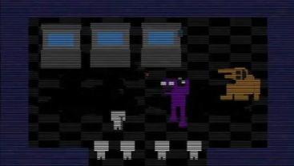

No terceiro jogo, *Five Nights at Freddy's 3*, o jogador assume o papel de um vigia noturno em uma atração baseada no passado de Freddy Fazbear's Pizza. O objetivo é sobreviver às noites enquanto lida com uma versão deteriorada dos animatrônicos, incluindo o novo antagonista Springtrap. O Retorno de Afton: O antagonista principal é Springtrap, uma versão degradada de um animatrônico, que na verdade contém o corpo do Homem Roxo (William Afton), que ficou preso na fantasia após tentar escapar de almas vingativas. Fantasmas: Além de Springtrap, o jogador enfrenta as alucinações dos "Phantom Animatronics", representações dos antigos animatrônicos.
